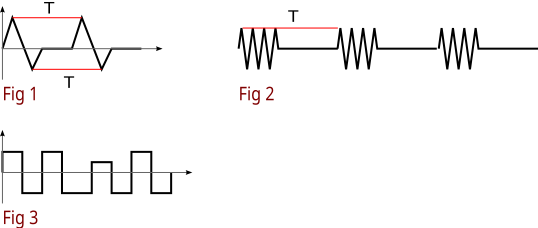

Auto-detect signal period
Auto-detect signal period
This is not so rare task as you can see (for ex., you can find one in oscilloscope's auto mode). There are several methods to do it: in frequency domain (FD) and in time domain (TD). Most famous FD method is the auto-correlation function: it's maximum let you find δτ - it will be period of signal. But main problem with FD methods is - it's "calculation speed". TD methods are faster. They are:
- Based on zero-crossing counting
- Peak rate
- Slope rate and so on…
Here is one of them: peak rate – "monitoring" max/min of signal in real-time. Main idea is that signal has max (and min) values which will repeat with dt equals to period of signal. Problems are:
- possible several min/max, for ex. noise
- signal can be superposition (sum) of signals with different frequencies
- signal may consists of "packets" (repeated also periodical waves)

See on Fig 1. - it illustrates idea of the algorithm: periodical wave has periodical max and min. If we can detect them, then we can detect period. But sometimes it's difficult to recognize min, sometimes - to recognize max, so we should use "peaks" - both (mins and maxs), and select biggest of them. So main idea of algorithm is:
PEAKS detector -> MAX -> Result (period)
However, Fig 3 shows us next problem: signal may be not ideal and will have distortions (horizontal - in time and vertical - in magnitude), so our algorithm should consider limits of non-ideal values of magnitude and peak distance repetitions. This will be equality domains for peak value and for possible periods. OK. And next problem is shown on Fig 2: if signal is sequence of a packets then we can detect 2 periods: of the signal in the packet or the period of packets. This algorithm will detect period as period of packets (bcz it's used for oscilloscope). And its problem is the noise, but to avoid noise effect we should use average of period maximums. Also equality domains will help us to avoid noise effect (as you can see in examples). So, final scheme will be:
PEAKS detector -> Packets PROCESSOR -> MAX -> Result (period)
Here is the Python prototype of this algorithm:
import sys import operator import math import random class AverageDistance: # max. distance (may be period) max = -sys.maxint - 1 # enough distances number to report difflim = 2 # proximity of max. distance values (equality domain) vallim = 0 # distance between peak d = 0 # sum of distances between peaks (for average) diff = 0 # number of distances between peaks (for average) ndiff = 0 def dump(self): return "d=%d, diff=%d, ndiff=%d"%(self.d,self.diff,self.ndiff) def __init__(self, **kw): for k,v in kw.items(): setattr(self, k, v) def calc(self, val): if abs(val - self.max) <= self.vallim: if self.d == 0: self.diff += val else: self.diff += self.d + val self.ndiff += 1 self.d = 0 elif val > self.max: self.max = val self.d = 0; self.diff = 0; self.ndiff = 0 else: self.d += val if self.ndiff > self.difflim: return self.diff/self.ndiff else: return -1 def test(self, samples): for smp in samples: #print "%d:"%smp x = self.calc(smp) if x != -1: return x #print "\t%s"%self.dump() return x def DistanceBetweenPeaks_max(**kw): return DistanceBetweenPeaks(cmpfunc=operator.gt, max = -sys.maxint-1, **kw) def DistanceBetweenPeaks_min(**kw): return DistanceBetweenPeaks(cmpfunc=operator.lt, max = sys.maxint, **kw) class DistanceBetweenPeaks: ### Next 2 attrs. defines max. based or min. based algorithm, ### default is max. based: # comparision func cmpfunc = operator.gt #max. sample max = -sys.maxint-1 # proximity of sample (near to max.) vallim = 0 # peak value if not -1 (to distinguish monotonic growed 2 close samples) # it's too not scalar, but domain (vallim is used as limit) peak = -1 # distance between two peaks d = 0 # index of max. imax = 0 # index of sample i = 0 def __init__(self, **kw): for k,v in kw.items(): setattr(self, k, v) def calc(self, val): ret = -1 #print "val:",val # version with cut 1,2,3,4... samples by limitation of "hole" between peaks #if abs(val - self.max) <= self.vallim and (self.i - self.imax)>1: if abs(val - self.max) <= self.vallim and \ ((abs(val - self.peak) <= self.vallim) if self.peak != -1 else True): ret = self.i - self.imax if ret == 0: ret = 1 self.imax = self.i #print "1:" #elif val > self.max: elif self.cmpfunc(val, self.max): #print "2: val=%d max=%d"%(val,self.max) # not neccessary next 2 lines: if val > self.peak and self.peak != -1: val = self.peak self.max = val self.imax = self.i self.d = 0 else: self.d += 1 self.i += 1 return ret def test(self, samples): for smp in samples: x = self.calc(smp) if x != -1: print x def test_alg(samples, dbp_kw={}, ad_kw={}): dbp_max = DistanceBetweenPeaks_max(**dbp_kw) dbp_min = DistanceBetweenPeaks_min(**dbp_kw) ad_max = AverageDistance(**ad_kw) ad_min = AverageDistance(**ad_kw) period_maxalg = -1 period_minalg = -1 result = -1 for smp in samples: time_maxalg = dbp_max.calc(smp) if time_maxalg != -1: period_maxalg = ad_max.calc(time_maxalg) if period_maxalg > result: result = period_maxalg time_minalg = dbp_min.calc(smp) if time_minalg != -1: period_minalg = ad_min.calc(time_minalg) if period_minalg > result: result = period_minalg return result # Test samples ################################################################################ # T=7 samples0 = ( 0, -10, -20, -10, 0, 10, 20, 0, -10, -20, -10, 0, 10, 20, 0, -10, -20, -10, 0, 10, 20, 0, -10, -20, -10, 0, 10, 20, 0, -10, -20, -10, 0, 10, 20, 0, -10, -20, -10, 0, 10, 20, ) # samples with not same maximus, T=7 samples1 = ( 0, -10, -20, -10, 0, 10, 18, 0, -10, -20, -10, 0, 10, 19, 0, -10, -20, -10, 0, 10, 19, 0, -10, -20, -10, 0, 10, 18, 0, -10, -20, -10, 0, 10, 19, 0, -10, -20, -10, 0, 10, 18, ) # samples with not same maximus and time between them, T=7 samples2 = ( 0, -10, -20, -10, 0, 10, 18, 0, -10, -20, -10, 0, 10, 19, 0, -10, -20, -10, 0, 10, 19, 0, -10, -20, -10, 0, 10, 0, 18, 0, -10, -20, -10, 0, 10, 18, 0, -10, -20, -10, 0, 10, 19, 0, -10, -20, -10, 0, 0, 0, 10, 18, 0, -10, -20, -10, 0, 1, 1, 10, 19, ) # T=3 samples3 = ( 0, 0, -5, 0, 0, -5, 0, 0, -5, 0, 0, -5, 0, 0, 0, 0, -5, 0, 0, -5, 0, 0, -5, 0, 0, -5, 0, 0, 0, 0, -5, 0, 0, -5, 0, 0, -5, 0, 0, -5, 0, 0, ) # T=3 samples4 = ( -1, -1, -10, -1, -1, -10, -1, -1, -10, -1, -1, -10, -1, -1, -10, -1, -1, -10, -1, -1, -10, -1, -1, -10, -1, -1, -10, -1, -1, -10, -1, -1, -10, -1, -1, -10, -1, -1, -10, -1, -1, -10, -1, -1, -10, ) # T=8 samples5 = ( 1,0,1,0,0,0,0,0,1,0,1,0,0,0,0,0,1,0,1,0,0,0,0,0,1,0,1,0,0,0,0,0,1, # T=12 #1,0,1,0,1,0,1,0,0,0,0,0,1,0,1,0,1,0,1,0,0,0,0,0, #1,0,1,0,1,0,1,0,0,0,0,0,1,0,1,0,1,0,1,0,0,0,0,0, #1,0,1,0,1,0,1,0,0,0,0,0,1,0,1,0,1,0,1,0,0,0,0,0, #1,0,1,0,1,0,1,0,0,0,0,0,1,0,1,0,1,0,1,0,0,0,0,0, ) # T=10 samples6 = ( 0,1,2,3,4,5,4,3,2,1,0,1,2,3,4,5,4,3,2,1,0,1,2,3,4,5,4,3,2,1, 0,1,2,3,4,5,4,3,2,1,0,1,2,3,4,5,4,3,2,1,0,1,2,3,4,5,4,3,2,1, ) # T=50 samples7 = ( 0,1,2,3,4,5,6,7,8,9,10,11,12,13,14,15,16,17,18,19,20,21,22,23,24,25, 24,23,22,21,20,19,18,17,16,15,14,13,12,11,10,9,8,7,6,5,4,3,2,1, 0,1,2,3,4,5,6,7,8,9,10,11,12,13,14,15,16,17,18,19,20,21,22,23,24,26, 24,23,22,21,20,19,18,17,16,15,14,13,12,11,10,9,8,7,6,5,4,3,2,1, 0,1,2,3,4,5,6,7,8,9,10,11,12,13,14,15,16,17,18,19,20,21,22,23,24,25, 24,23,22,21,20,19,18,17,16,15,14,13,12,11,10,9,8,7,6,5,4,3,2,1, 0,1,2,3,4,5,6,7,8,9,10,11,12,13,14,15,16,17,18,19,20,21,22,23,24,26, 24,23,22,21,20,19,18,17,16,15,14,13,12,11,10,9,8,7,6,5,4,3,2,1, 0,1,2,3,4,5,6,7,8,9,10,11,12,13,14,15,16,17,18,19,20,21,22,23,24,26, 24,23,22,21,20,19,18,17,16,15,14,13,12,11,10,9,8,7,6,5,4,3,2,1, ) # "square", T=8 samples8 = ( 0,0,0,5,5,5,5,5,0,0,0,5,5,5,5,5,0,0,0,5,5,5,5,5,0,0,0,5,5,5,5,5, 0,0,0,5,5,5,5,5,0,0,0,5,5,5,5,5,0,0,0,5,5,5,5,5,0,0,0,5,5,5,5,5, 0,0,0,5,5,5,5,5,0,0,0,5,5,5,5,5,0,0,0,5,5,5,5,5,0,0,0,5,5,5,5,5, ) # Sin: noise is 1..300. Magnitude is 1000, T=360 # to detect DistanceBetweenPeaks.vallim = 260..300, AverageDistance.vallim=10 samples9 = [] for angle in range(0, 5*360, 1): smp = math.sin(math.radians(angle)) smp += random.uniform(0.001,0.5) samples9.append(int(smp*1000)) # Long glitches, T=8 samples10 = ( 0,0,0,1000,5,5,1000,5,0,0,0,5,5,1000,5,1000,0,0,0,5,5,5,5,5,0,0,0,100,5,5,5,5, 0,0,0,5,5,5,100,5,0,0,0,100,5,5,5,5,0,0,0,5,5,5,5,100,0,0,0,5,5,5,5,100, 0,0,0,5,5,100,5,5,0,0,0,5,5,100,5,5,0,0,0,5,5,5,100,5,0,0,0,5,5,100,5,5, ) # Tests ################################################################################ print "samples0:", test_alg(samples0) print "samples1:", test_alg(samples1) print "samples2:", test_alg(samples2, dict(vallim=1), dict(vallim=1)) print "samples3:", test_alg(samples3) print "samples4:", test_alg(samples4) print "samples5:", test_alg(samples5) print "samples6:", test_alg(samples6, dict(vallim=0), dict(vallim=1)) print "samples7:", test_alg(samples7, dict(vallim=1), dict(vallim=1)) print "samples8:", test_alg(samples8, dict(vallim=1), dict(vallim=1)) print "samples9:", test_alg(samples9, dict(vallim=260), dict(vallim=100)) print "samples10:", test_alg(samples10, dict(vallim=1), dict(vallim=1)) #print "samples9:", test_alg(samples9, dict(vallim=60, peak=1000), dict(vallim=60)) for i,ss in enumerate((samples0, samples1, samples2, samples3, samples4, samples5, samples6, samples7, samples8, samples9, samples10)): with open("data%d.dat"%i, "wt") as f: for smp in ss: f.write("%d\n"%smp)
Here is DistanceBetweenPeaks - the general form of PEAK detector. It can be parametrized with cmpfunc and max for 2 different kind of detection: detection max's and detection min's (there are 2 functions: DistanceBetweenPeaksmax, DistanceBetweenPeaksmin). Parameters: vallim - equality domain (limit) for peak values (absolute value, not ratio!), peak - value of peak (not needed but in difficult cases, very noised signals can help).
AverageDistance is the PACKETS PROCESSOR. It's parameters are: vallim - equality domain of distance (to detects them as equaled), difflim - how many times of repeat are enough to detect repetition as period.
testalg() is the main function - algorithm scheme implementation. It uses to peak detectors as alternative detectors and select max. value of period after processing possible packets.
This code is not very Pythonic but it focused to be easy ported to C and it's nature is "dataflowable" - functions has "state" (structure) and processes only ONE SAMPLE per call (should be inline or macros), so they are ideal for Real-time processing. Algorithm is faster then autocorrelation based, probability based, etc.
test_alg() needs however not one sample but list of samples - this signal fragment should has length of several periods, real length depends on used difflim parameter.
We see that the algorithm can detects even very noised signal (sample9) and signals with strong magnitude distortion and time distortion.
Result period is in "samples" units ("hops"/"holes" between samples). When you know sampling frequency then it's very easy to convert it to Hz :)
This algorithm is very simple and is usable in "fast" detection tasks but when you make offline signal processing, you should use more accurate algorithm!